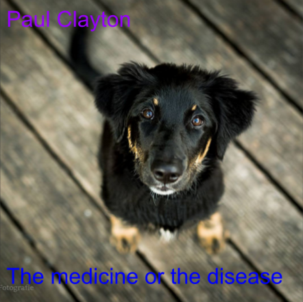

Design a Band Challenge
Challenge background information
This challenge was an experiment on how to use design thinking, empathy and the DEEP process to create a fictional band. Design thinking process is a creative process when people use their creativity to create art for their target audience. In this case we want to create for other people so we have to know what people want or need in the product. The way we find what they want/need is to use empathy. When creating the album cover, we came up with two prototypes for the cover and showed them to each other, we voted on which one we like the most between the two and that is how we finalized on what cover would be chosen. The way this project did that was by using the DEEP process. The first step was D, discover; we would discover what the people like. We put together several differnt names we like and together would vote on our favorite name among all the names. The second was E, using empathy based on peoples reviews on the product(s). We asked each other questios about our favorite colors, text style and preference of abstract or realistic images then used that info to make our band cover's details. Next was also E, experiment with different features to make your product better. We used compilations of random names and images to create 2 visual covers then gave each other pros, cons and ideas about the covers then used the one that had the most votes. Last is P, Produce the final product with all the info you've gained to perfect and finsh your product. We finalized all the details to make a backstory/context for the band to complete the band
Album Cover
Background
Maxwell, and Brock were both childhood friends who grew up in the same neighborhood and even when they were little, their musical interest was obvious. As they grew, they dedicated themselves to truly express their interest, Maxwell becoming a vocalist and Brock learning Piano. In their 5th grade year, they decided to start a band, they even put papers across their school and neighborhood but nobody came. That’s what it seemed until wild and quiet souls Nicholas and Freddy respectively came to answer the call of the quest towards symphonic mastery! They were growing popular since their first debut in a 6th talent show, even requested to do encores, but the band members, happy as they were to do shows, were feeling like they were missing something. Coincidentally, their prayers were answered by the appearance of the cool Drake Owen. Once he joined their band got even more recognition, every year they continued doing talent shows all the way to high school. Their luck was fortunate when a talent agent was in the audience who signed them a contract and made them an official band